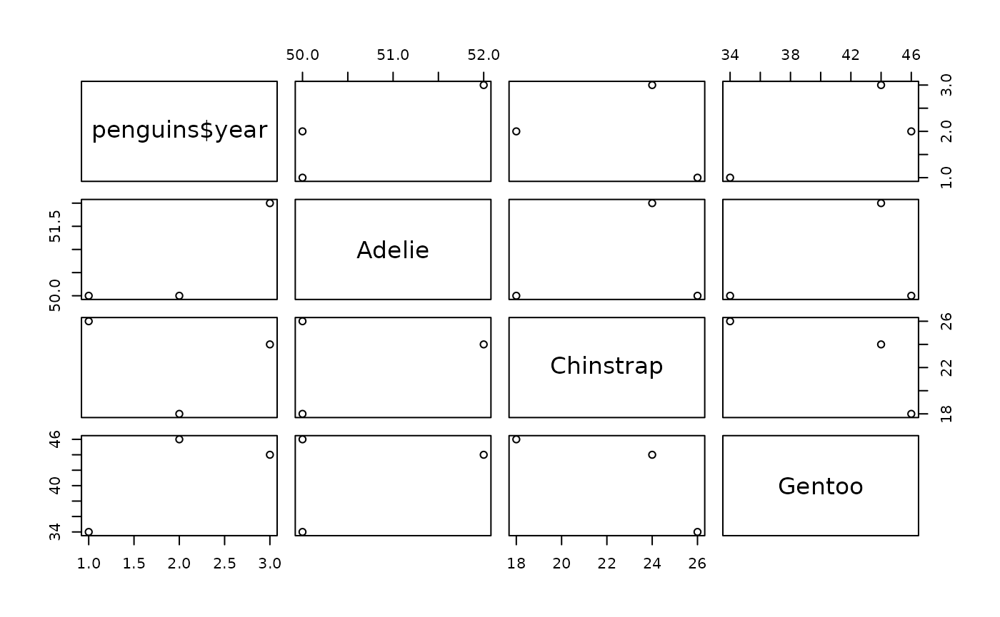
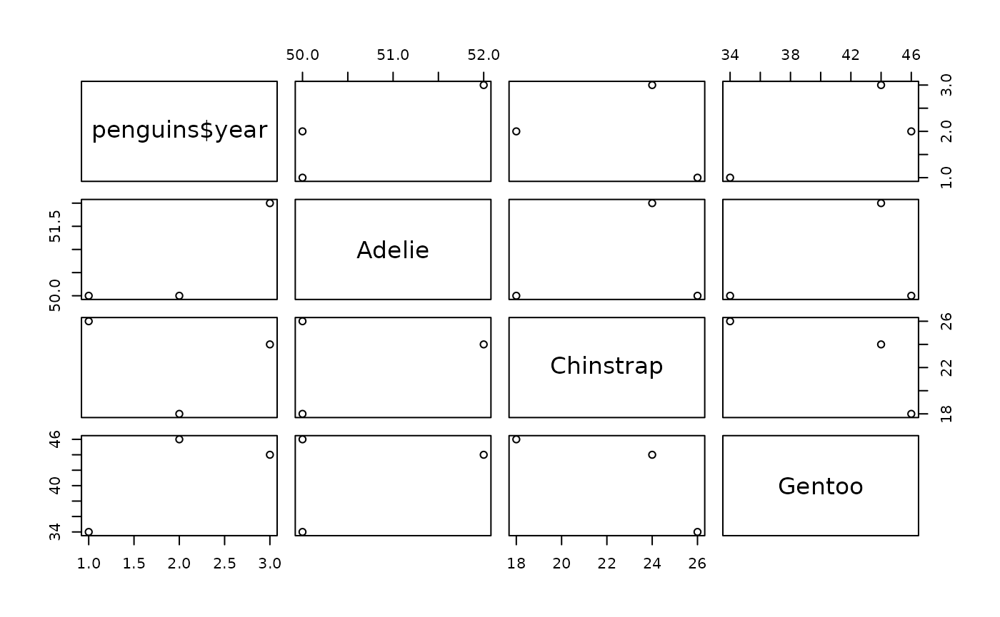

So far we’ve looked at how two variables are distributed across every combination of values.
Howeve, we often are interested in how the two variables relate to each other. For example, are people who get small coffees different than people who get large coffees?
This can be tricky because there are different numbers of coffee orders in each group.
One way to understand this would be to break our table into parts.
Rows
| Size | Milk | No Milk | Total |
|---|---|---|---|
| Small | 10 | 9 | 19 |
| Medium | 8 | 11 | 19 |
| Large | 12 | 15 | 27 |
| Size | Milk | No Milk |
|---|---|---|
| Small | 10 | 9 |
| Size | Milk | No Milk | Total |
|---|---|---|---|
| Medium | 8 | 11 | 19 |
| Size | Milk | No Milk | Total |
|---|---|---|---|
| Large | 12 | 15 | 27 |
Now we can calculate the percentages for each coffee size.
| Size | Milk | No Milk |
|---|---|---|
| Small | 53% | 47% |
| Size | Milk | No Milk | Total |
|---|---|---|---|
| Medium | 42% | 58% | 19 |
| Size | Milk | No Milk | Total |
|---|---|---|---|
| Large | 44% | 56% | 27 |
It turns out the medium coffee group has the highest percentage of orders with no milk. This is true even though the large group had more actual no milk orders.
Percentages are important because they let us make comparisons on a standardized basis. That is we convert all of the rows to a representation that is based on having 100 observations in the group.
“Percent” comes from “Per cent” where cent means 100. Even though there are not 100 people in the group, we can still calculate how many would be in each milk/no milk category if the balance didn’t change.
Because we calculated within the rows, we call these row percents.
We can put the table back together.
| Size | Milk | No Milk |
|---|---|---|
| Small | 53% | 47% |
| ———– | ——- | ——- |
| Medium | 42% | 58% |
| ———– | ——- | ——- |
| Large | 44% | 56% |
We can tell that this table is row percents because adding up the values in each row give you 100.
Using the penguins data we can get row percents.
data_tabulate(penguins$year, by = penguins$species,
proportions = "row",
remove_na = TRUE) -> table
table |> print_md()| penguins$year | Adelie | Chinstrap | Gentoo | Total |
|---|---|---|---|---|
| 2007 | 50 (45.5%) | 26 (23.6%) | 34 (30.9%) | 110 |
| 2008 | 50 (43.9%) | 18 (15.8%) | 46 (40.4%) | 114 |
| 2009 | 52 (43.3%) | 24 (20.0%) | 44 (36.7%) | 120 |
| Total | 152 | 68 | 124 | 344 |
table |> plot() 
The percentage of penguins who are Adelie was pretty stable over the three years. However, compared to 2007, in 2008 the percentage of penguins who are Chinstrap dropped substantially It then then recovered slightly in 2009. This means that the percent who are Gentoo increased, since the percentagess have to add up to 100 within each row.
Columns
We can do the same kind of process with columns.
| Size | Milk | No Milk | Total |
|---|---|---|---|
| Small | 10 | 9 | 19 |
| Medium | 8 | 11 | 19 |
| Large | 12 | 15 | 27 |
| Total | 30 | 35 | 65 |
| Size | Milk |
|---|---|
| Small | 10 |
| Medium | 8 |
| Large | 12 |
| Total | 30 |
| Size | No Milk |
|---|---|
| Small | 9 |
| Medium | 11 |
| Large | 15 |
| Total | 35 |
Calculating the percentages base on the column totals
| Size | Milk |
|---|---|
| Small | 33% |
| Medium | 27% |
| Large | 40% |
| Total | 30 |
| Size | No Milk |
|---|---|
| Small | 26% |
| Medium | 31% |
| Large | 43% |
| Total | 35 |
These are the column percents.
Putting the table back together we can easily see how they compare.
| Size | Milk | No Milk |
|---|---|---|
| Small | 33% | 26% |
| Medium | 27% | 31% |
| Large | 40% | 43% |
| Total | 30 | 35 |
Looking at it from this perspective, we can see that people who ordered coffee without milk, generally speaking, ordered larger coffees than those who ordered with milk.
Now looking at the penguin data column percent, we can look at how year is distributed for each species.
data_tabulate(penguins$year, by = penguins$species,
proportions = "column",
remove_na = TRUE) -> table
table |> print_md()| penguins$year | Adelie | Chinstrap | Gentoo | Total |
|---|---|---|---|---|
| 2007 | 50 (32.9%) | 26 (38.2%) | 34 (27.4%) | 110 |
| 2008 | 50 (32.9%) | 18 (26.5%) | 46 (37.1%) | 114 |
| 2009 | 52 (34.2%) | 24 (35.3%) | 44 (35.5%) | 120 |
| Total | 152 | 68 | 124 | 344 |
table |> plot() 
The Adelie were evenly divided over the three years. Among the Chinstraps, a smaller percentage of observations were from 2008 than other species. Among Gentoo, 2007 was the smallest year.